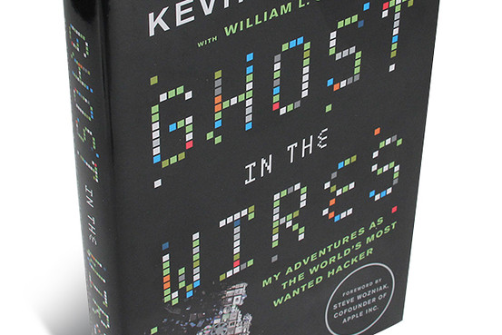

The paperback edition of this book (copyright 2011) contains hidden messages, which ask questions. Cracking them on one's own (or in a group) can prove very educational.
I haven't yet been able to crack all of them, but I will keep the page updated as I can get more and more. Started: Tue Jul 5, 2016 Last updated: 2:13pm Sun Jul 10, 2016
As well as a knowledge of ciphers and encryption, to solve these one will probably need to make multiple programs to crack these messages. I made numerous bash scripts to do simple conversions like reversing text or converting 1's and 0's to dots and dashes. I also used a program I created in my CS2112 class at Cornell. My second assignment was all about ciphers and RSA, looks like it came in handy here!
Below are the answers that I have found so far, if you want to crack them on your own, I would look at this page: http://www.drewsdunne.com/GITW/messages.html, it only contains the encrypted messages. Then come check your answers here!
If you would like to talk to me about these email me: FFVJ EE OTSNFHFYPS UBX NZO First crack that email (hint it's a Vigenere, the key is somewhere in this description)
This information was gained through scouring the Internet as well as lots of time spent cracking the messages. So feel free to reuse this information. This page was created using Typora.
Max vhlm hy max unl wkboxk ingva B nlxw mh ingva fr hpg mktglyxkl
The first of these are pretty simple, this was a Caesar cipher. The capital B looks like it should be an I, rotating the entire sentence by 19 gives you the sentence.
Caesar shift: 19
// ROT19 THE COST OF THE BUS DRIVER PUNCH I USED TO PUNCH MY OWN TRANSFERS
Q: The cost of the bus driver punch I used to punch my own transfers A: $15
estd mzzv esle elfrse xp szh ez ncplep yph topyetetpd hspy T hld l acp-eppy
This again was just a Caesar cipher, the capital T somewhat tips you off. Rotating that to an I reveals the sentence
Caesar shift: 11
// ROT11 THIS BOOK THAT TAUGHT ME HOW TO CREATE NEW IDENTITIES WHEN I WAS A PRETEEN
Q: This book that taught me how to create new identities when I was a preteen A: The Paper Trail
pbzfsobp dkfobtpkx lq pbkfi ppbkfpry aoxtolc iixz lq abpr bobt pbzfsba cl bmvq obail bpbeQ
This one got a bit trickier, the text had to be reversed after applying a Caesar shift.
Caesar shift: 23, reverse string
// ROT23 SECIVRES GNIREWSNA OT SENIL SSENISUB DRAWROF LLAC OT DESU EREW SECIVED FO EPYT REDLO ESEHT // Reverse THESE OLDER TYPE OF DEVICES WERE USED TO CALL FORWARD BUSINESS LINES TO ANSWERING SERVICES
Q: These older type of devices were used to call forward business lines to answering services A: Diverters
gsvmznvlugsvnzrmuiznvhrszxpvwzgfhxrmgsvzikzmvgwzbh
This next one is the first not using a rotation. It still uses a type of substitution cipher though, in particular it flips the alphabet. This is also known as an atbash cipher.
Atbash Cipher: ZYXWVUTSRQPONMLKJIHGFEDCBA, add spaces
// Atbash cipher THENAMEOFTHEMAINFRAMESIHACKEDATUSCINTHEARPANETDAYS
Q: The name of the main frames I hacked at USC in the Arpanet Days A: DEC-20, DEC TOPS-20
jbi ujt veo eco ntk iwa lhc eeo anu uir trs hae oni rfn irt toh imi ets shs !eu
This one required more work. Looking at the words, it's odd they are all 3 letters long. Putting these into columns, you realize the text can be read down. Transposing that horizontally you get readable text. Reording from 123 to 321 you get a full sentence.
Columnar Transposition: Key 321
// Put into columns 123 --- jbi ujt veo eco ntk iwa lhc eeo anu uir trs hae oni rfn irt toh imi ets shs !eu // Transpose 1: juvenileauthorities! 2: bjectwheniranfromthe 3: itookacourseinthissu // Apply the key of 321 3: itookacourseinthissu 2: bjectwheniranfromthe 1: juvenileauthorities! // Conjoin itookacourseinthissubjectwheniranfromthejuvenileauthorities!
Q: I took a course in this subject when I ran from the juvenile authorities! A: Criminal Justice
bmFtZXRoZWNvbXBhbnl3aGVyZWJvbm5pZXdhc2VtcGxveWVkd2hlbndlc3RhcnRlZGRhdGluZw
If one knows common encoding types, a simple paste into an online Base64 decoder would reveal an English sentence.
Base64 encoding
// Base64 decode namethecompanywherebonniewasemployedwhenwestarteddating
Q: Name the company where Bonnie was employed when we started dating A: GTE
multbqncannqenabrhfgacnqogehchetbkkebmsqgkncchebr
Again back to simple substition ciphers. Using the answer from the last chapter, we add GTE to the beginning of the alphabet and remove G, T, and E from the original and push the rest back.
Subsition Cipher: Key GTE
// Sub Cipher, new alphabet: GTEABCDFHIJKLMNOPQRSUVWXYZ NUMBEROFDOORCODESIHADFORPACIFICBELLCENTRALOFFICES
Q: Number of door codes I had for Pacific Bell Central Offices A: 11
'siass nuhmil sowsra amnapi waagoc ifinti dscisf iiiesf ahgbao staetn itmlro
Column transposition, reverse,
// Put words into columns 123456 ------ ‘siass nuhmil sowsra amnapi waagoc ifinti dscisf iiiesf ahgbao staetn itmlro // Transpose 1: 'nsawidiasi 2: suomafsihtt 3: ihwnaicigam 4: amsagniebel 5: sirpotssatr 6: slaiciffono //Reverse 1: isaidiwasn' 2: tthisfamous 3: magicianwhi 4: lebeingasma 5: rtasstopris 6: onofficials // Conjoin with 123456 isaidwasn'tthisfamousmagicianwhilebeingasmartasstoprisonofficials
Q: I said I wasn’t this famous magician while being a smart ass to prision officials A: David Copperfield
tvifafwawehes hsesoonvtlimaeloemtcagmen irnoerrldony
Chapter 9 introduced a new type of cipher, a rail cipher. Put the words into rows and add periods or whatever to line up the letters
Railfence Cipher
// Set up rails t...v...i...f...a...f...w...a...w...e...h...e...s .h.s.e.s.o.o.n.v.t.l.i.m.a.e.l.o.e.m.t.c.a.g.m.e.n ..i...r...n...o...e...r...r...l...d...o...n...y... // Read off thisversionofnovatelfirmwareallowedmetochangemyesn
Q: This version of NOVATEL firmware allowed me to change my ESN A: 1.05
gnkusr ooursnsisti ttnotoihiec rolwaintmlk ovtgp
To crack this one I used a Railfence Cipher again. It's tough to notice these and this one took a while.
// Set up rails g.......n.......k.......u.......s.......r .o.....o.u.....r.s.....n.s.....i.s.....t.i ..t...t...n...o...t...o...i...h...i...e...c ...r.o.....l.w.....a.i.....n.t.....m.l.....k ....o.......v.......t.......g.......p // Read off GOTROOTONUNLVWORKSSTATIONUSINGTHISSIMPLETRICK
Q: Got root on UNLV workstation using this simple trick A: Turned off and on while repeatedly pressing Control-C
ow gw ty kc qb eb nm ht ud pc iy ty ik tu zo dp gl qt hd
Playfair cipher, regular abc table, J as I
// Put into Playfair decoder mybrotheradamlistenedtothistypeofmusic
Q: My brother Adam listened to this type of music A: Rap and hip-hop
idniidhsubrseognteiuignuhrzdalrd ietfetinmeablnigorcsnuatoieclei
This one again looks like something we could put into columns.
Columnar Transposition: Key 2 1
// Putting one on top of another idniidhsubrseognteiuignuhrzdalrd ietfetinmeablnigorcsnuatoieclei // Transposing ii de nt if ie dt hi sn um be ra sb el on gi ng to er ic us in gu na ut ho ri ze dc al le ri d // Conjoining the rows in order iidentifiedthisnumberasbelongingtoericusingunauthorizedcallerid
Q: I identified this number as belonging to Eric using unauthorized Caller ID A: (310) 837-5412
qclgjq'acrjcrlmqnyrcpgursmzyddmbcnngrgmfupceylyk
Surprisingly a simple rotation
Caesar cipher: ROT24, Reverse
// ROT24 SENILSCETLETNOSPATERIWTUOBAFFODEPPITIOHWREGANAM // Reversed MANAGERWHOITIPPEDOFFABOUTWIRETAPSONTELTECSLINES
Q: Manager who I tipped off about wiretaps on Teltec's lines A: Mark Kasden
c2VuaWxzJ2RhZHltbm9zcGF0ZXJpd2VodHRjZW5ub2NlcmRuYXNlbGVnbmFzb2xvdHlsZm90ZGFob2h3dG5lZ2F5dGlydWNlc2xsZWJjYXBlaHQ=
This looked very much like another Base64, trying that revealed a backwards sentence
Base64 encoding, reverse string
// decoded Base64 senils'dadymnospateriwehttcennocerdnaselegnasolotylfotdahohwtnegaytirucesllebcapeht // reverse thepacbellsecurityagentwhohadtoflytolosangelesandreconnectthewiretapsonmydad'slines
Q: The PacBell security agent who had to fly to Los Angelos and Reconnect the wiretaps on my dad’s lines A: Darrell Santos
ud mn cf ub mw re lb is ba of gx ty qc qh il ea ym nx bz ub he cf th is
This one took some trying. After trying to dictionary attack it, I tried reversing the string and then put it into a decoder and it popped at using the regular Playfair table
Reversed, then Playfair cipher: regular table, J as I
// Reversed si ht fc eh bu zb xn my ae li hq cq yt xg fo ab si bl er wm bu fc nm du // Playfair decoded th is ha ck er we sh ow ed of fs as to wh il ea th am bu rg er ha ml et
Q: This hacker we showed offs as to while at Hamburger Hamlet A: Eric Heinz
7\3|2\9|3\5|4/0/8/2|6\7/0/4\4\5/6/6\5/7/8/9|7\8/7|9\5/9\2\3\5\7/8|2/0/8|2/6|6|2|7\7\0\4\9|
I had some help with this one. I was told it used a phone dial/keypad cipher. I could barely find anything on this but I finally figured out the slashes represent which letter in the group of three it makes
Phone Dial Cipher, Vigenere "heinz"
// # = Phone Keypad, \ : Left, | : Middle, / : Right
("2", "ABC");
("3", "DEF");
("4", "GHI");
("5", "JKL");
("6", "MNO");
("7", "PRS");
("8", "TUV");
("9", "WXY");
("0", "Q Z");
PEAXDKIZVBMSZGGLOMLSVXPVRWLWADJSUCZUCNNBPPQGX
// Vigenere "heinz"
IASKEDERICFORTHEKEYTOTHISPHONECOMPANYFACILITYQ: I asked Eric for the key to this phone company facility A:
100 0000 10 1 01 001 00 1000 1 010 11 000 0 0000 11 000 000111 00011 10000 11111 11110 11000 00111 10000 11111 10000 11111
At first look, this looks like it could be binary, but after trying it clearly doesn't work. So the next obvious choice is morse. It reveals two english jumbles, but alternating between them actually works! The number I had to go over again because it didn't make sense. So starting with the other provides a number which makes sense!
Morse code
// 1='.' 0='-' w?aengmjekiot?io?8154271515 // 1='-' 0='.' dhntauibtrmsehms?3609726060 // Every other letter WHATNUMBERISTHIS?8659221010 // Reversing the number at the end again WHATNUMBERISTHIS?3104776565
Q: What number is this? 310-477-6565 A: The Los Angelos headquarters of the FBI
6365696a647a727573697775716d6d6e736e69627a74736a6f7969706469737967647163656c6f71776c66646d63656d78626c6879746d796f6d71747765686a6a71656d756c70696b6a627965696a71
These looked like hexadecimal letter codes as they all are in the 60 and above range. After decoding some text, I ran that through a few Cipher's, it turned out to be last chapter's answer in a Vigenere cipher.
Hexadecimal, Vigenere: Key LAFBI, Reverse
// Convert from hexidecimal ceijdzrusiwuqmmnsnibztsjoyipdisygdqceloqwlfdmcemxblhytmyomqtwehjjqemulpikjbyeijq // Vigenere cipher with LAFBI (last answer) REDIVORPRALULLECSIHTOTNIGNIKCAHYBCIREGNILLACEREHWTAHTSENOHPLLECIBFEHTDEIFITNEDII // Reversed IIDENTIFIEDTHEFBICELLPHONESTHATWHERECALLINGERICBYHACKINGINTOTHISCELLULARPROVIDER
Q: I identified the FBI cell phones that where calling Eric by hacking into this cellular provider A: PacTel Cellular
hranmoafignwoeoeiettwsoeheneteelaefnbaethscvrdniyajspwrl
Have yet to crack this one. No spaces so it's difficult to find words.
Columnar Transposition key: 2 1
// Columnar Transposition "2 1" therealnameofanfbiagentwhosecoveridentitywasjosephwernle
Q: The real name of an FBI agent whose cover identity was Joseph Wenle A: Joseph Ways
yo kb pn oc ox rh oq kb oh kp ge gs yt yt hg sa li mt ob sa po po mk pl md
Another playfair cipher.
Playfair cipher, keyword FBI
// Put into a Playfair decoder with FBI thecompanyteltechackedintotogetinformationonpeople
Q: The company Teltec hacked into to get information on people A: TRW
77726e6b7668656a77676b6b276c6d6b6274616672656567776c6a7368697a70726f6d79656c
The hexadecimal here was familiar, but after you get jumbled text. Trying a Vigenere cipher with last chapter's answer reveals an answer
Hexadecimal, Vigenere: Key TRW
// Decoded the Hex wrnkvhejwgkk'lmkbtafreegwljshizpromyel // Ran through Vigenere with key TRW (answer to last chapter) DARRELLSANTOS'VOICEMAILPASSWORDWASTHIS
Q: Darrell Santos' voicemail password was this A: 1313
opoybdpmwoqbcpqcygagpcgxbpusapdluscplchxwoisgyeasdcpopdhadfyaethis
Plugging this into a Playfair breaker, it uses the regular playfair table, but it came out backwards. So the reverse can be applied before or after.
Reverse, Playfair Cipher (J = I)
// Reversed sihteayfdahdpopcdsaeygsiowxhclpcsuldpasupbxgcpgagycqpcbqowmpdbyopo // Playfair Cipher thisdeviceiconnectedwithmyscannertoalertmewhenfbiwasnearmylocation
Q: This device I connected with my scanner to alert me when FBI was near my location A: DDI (Digital Data Interpreter)
1001 0111 01 00 0 0 101 011 1111 1110 1011 1111 101 0110 1111 1101 110 010 100 0 0100 11 1011 1011 000 10 101 01
This again looks like some sort of Morse code. DDI, the answer to the last one, is also a perfect Vigenere key, so trying that comes up with nothing. Trying an autokey works out perfectly.
Convert Morse code, Vigenere Autokey
// Converted from Morse xjaieekw??y?kp?qgrdelmyysnka // These question marks don't make sense pbnmttrdhvlhrxhfukwtyilloarn // Vigenere Autokey with DDI myfavoritedonutsarethesekind
Q: My favorite donuts are these kind A: FBI donuts
anhgynnrtfafaqgmbhsuuzkzfbhbfk
This is a very short one, odd.
Playfair with fbidonuts, Reverse
// Playfair cipher with fbidonuts as key sagevsalninosrepdetnawarofedoc // Reversed codeforawantedpersoninlasvegas
Q: Code for a wanted person in Las Vegas A: 440
nhyitekmnryoogmwefehocttntnoauttosumooalgei
Columnar transposition
// Split into threes nhy ite kmn ryo ogm wef eho ctt ntn oau tto sum ooa lge i // Put into columns nhy ite kmn ryo ogm wef eho ctt ntn oau tto sum ooa lge i // Read bottom up to left ilostonceworkingoutatthegymtheamountofmoney
Q: I lost once working out at the gym the amount of money A: $11,000
11 0100 000 111 010 0 011 0010 000 010 11 10 1101 01 01 1 000 1 1111 01 0 011 1 010 1 1000 000 010 01 00 01 01 011 00 1101 0010 1 010 1 10 0 001101 110010 001101 110010 001101 100 0000 1 10 101 0 111 0 10 010 0101 0000 11 10 001 10 1 011 00 100 1 10 0 00 0 00 1 000
More morse code. Let's do what we did on the first one.
Morse code
// Morse mlsorewfsrmnqaatst?aewtrtbsraiaawiqftrtne?????dhtnkeoenr?hmnuntwidtneieits iyosktdqokiafnneoehntdekejoknmnndmfqekeat?????w?eartstakc?iagaedmweatmtmeo // Inverse //Combining every other letter (starting with I) ilookedforinfantothatwereborninadifferent?????whenresearchingnewmdentities
Q: I looked for infants that were born in a different ????? when researching new identities A: state
laeaslarhawpuiolshawzadxijxkjgvvbvaxavlowyuuhdsxausmrmbulbegukseq
Another Vigenere autokey cipher using state as the key. These are easy to find, just use a regular vigenere decrypt and look at the first few words, if they look decrypted, then keep adding that text to the end!
Vigenere Autokey: state
// using last chapter as a key thehostnamewhichwasusedforthesecuritybugdatabaseatsunmicrosystems
Q: The host name which was used for the security bug database at SunMicrosystems A: elmer (the bug database)
70776d61766374666f2770636d6167797a786977786f78656a7974696465737073786f65696f63726f64706a6f766b636165686573677069637a61786172
Looks like more hexadecimal! After reversing, and trying viginere it's easy to see it's an auto key.
Hexadecimal, Vigenere Autokey "elmer", Reversed
// Hexadecimal conversion pwmavctfo'pcmagyzxiwxoxejytidespsxoeiocrodpjovkcaehesgpiczaxar // Vigenere Autokey of elmer llawerifs'llevonotnikaerbotemdewollamargorpsihtniwalfytirucesa // Reversed asecurityflawinthisprogramallowedmetobreakintonovell'sfirewall
Q: A security flaw in this program allowed me to break into novell's firewall A: sendmail
qnxpnebielnudqqpbibecua3m'llswhmmhrdzucclsfvqmdunepbkreezkarsnngpkgmscdnkr
Hmm you can almost make out a because out of becua3m. Plugged this into a Playfair cipher with the key sendmail and it started to make sense. After turning off encoding of double letters the text became clear. There was no because :(
Playfair cipher with key "sendmail" and no double letter encoding
// Playfair thenameoftheemployeethatsetmeupanaccountonnovellscomdialupterminalserver
Q: The name of the employee that set me up an account on novell's 3Com dialup terminal server A: Shawn Nunley
eyiyibemhemijixvpyiocjkxdwwxdazvtkaazrvl
Vigenere Autokey with "nunley" as the passphrase
Vigenere Autokey "nunley", Reversed
// Vigenere Autokey "nunley" revnednimrifwalehtmorfderifsawinosaereht // Reversed thereasoniwasfiredfromthelawfirmindenver
Q: The reason I was fired from the law firm in Denver A: For "consulting" on work hours
usygbjmqeauidgttlcflgqmfqhyhwurqmbxzoqmnpmjhlneqsctmglahp
Vigenere autokey with consulting, Reverse. These are getting repetitive
Vigenere autokey with consulting, Reverse
// Autokey consulting selohytirucessmvsuoremunemgnidnesotnidekcirtsawnosrepsiht // Reverse thispersonwastrickedintosendingmenumerousvmssecurityholes
Q: This person was tricked into sending me numerous VMS security holes A: Neill Clift
tpdwxjw’viyegmzbecfvpcqtuwdinpfhzvvfadzbkfoevcnseozxffdlvrdo’jwsjkzllxwapfrvhuaqz
Vigenere Autokey "clift", Reverse
Vigenere Autokey with "Clift", Reverse
// Autokey revress’arumomihsotnikcahotgnirotinomkrowtenhguorhtdrowssaps’resusihtdesimorpmoci // Reversed icompromisedthisuser’spasswordthroughnetworkmonitoringtohackintoshimomura’sserver
Q: I compromised this user's password through network monitoring to hack in to Shimomura's server A: david
010 1 0001 101 0 111 000 100001 01 101 001 00 111 00 00 1111 000 01 111 1 10 000 0000 1001 000 11 0000 0 111 0 0 0101 010 110 111 111 0 1111 1 101 111 1101 110 01 00 010 111 000 0100 111 01 100 00
What looks to be more morse code.
N/A
// Morse to text, both 0 as dot and dash rtvkeos?akuioii?saotnshxsmheoee?rgooe?tkoqgairosloadi ke?rtso?nrgmsmmhonseao?poi?tsttckussthersfunmksoysnwm // Combined with sublength of 1 revress?arumomihsnoenohpsihtotecruosehtrofgnikoolsawi // Reversed iwaslookingforthesourcetothisphoneonshimomura?sserver
Q: I was looking for the source to this phone on Shimomura's server A: OKI
eqfeihchqqlndcinrarnfhqdvmlqnmcrlphaccqmaefkzhlslnstmqgmma
Bifid Cipher with OKI. The main method I used to crack these were to try each cipher on this site: http://rumkin.com/tools/cipher/. Eventually one makes sense!
Bifid Cipher with OKI, Reverse
// Bifid OKI emrofrelipmocalorotomehtdedaolpuscirtemretnitaeeyolpmesiht // Reverse thisemployeeatintermetricsuploadedthemotorolacompilerforme
Q: This employee at Intermetrics uploaded the motorola compiler for me A: Marty Stolz
ifdmnbbnqitnsobmmmtthdkhqbqzpo"nduqz"zhnemccxhyaninaxanf
That quote is definitely the word "marty". Using marty in a Bifid like the last one reveals the reversed text.
Bifid with Marty, Reversed
// Bifid with Marty llewehtmorfmetsyssihtnotnuocca"ytram"ymotnideggolenoemos // Reversed someoneloggedintomy'marty'accountonthissystemfromthewell
Q: Someone logged into my "marty" account on this system from the Well A: escape.com
kgqmicewdnfmastcefkxlkqshgrfsspotxuesqvcohxttpcuvhnxawypuwzdt
Don't know
N/A
// kg qm ic ew dn fm as tc ef kx lk qs hg rf ss po tx ue sq vc oh xt tp cu vh nx aw yp uw zd t
Q: A:
0\6\2/7\4/2\4\8\2|8|6|7\0\4\3/2|8/7/3\2/2/5|6/4|8\7\6\6\3\2|3/3\7/4|6/0/3|7/0\6|8|9/4\4/6/5/3|5|0\8\9\7/4|4/4|8\5/3/3|5|8|4/0\5|8/2/
Another phone dial cipher.
Phone dial,
// Phone dial QMCPIAGTBUNPQGFBVSDCCKOHTPMMDBFDSHOZESQNUYGIOLEKQTWSHIHTLFEKUIQKVC //
Q: A:
001101 110010 001101 110010 001101 110010 001101 110010 111 00 011 00 10 110 0000 11 00 1001 110 0100 111 10 11 00 1101 1001 0100 10 100 11 01 101 0010 11 101 0010 11 101 011 111 000 100 010 1001 001 1 101 01 010 1010 01 0 1110 10 0111 010 010
More morse code?
N/A
// Morse to text 0 as . : ????????oiwinghmixglonmiqxlndmakfmkfmkwosdrxutkarcae?njrr 0 as - : ????????smdmau?impuysaimfpyawinrqirqirdsowkpgernk?ntvabkk
Q: A: